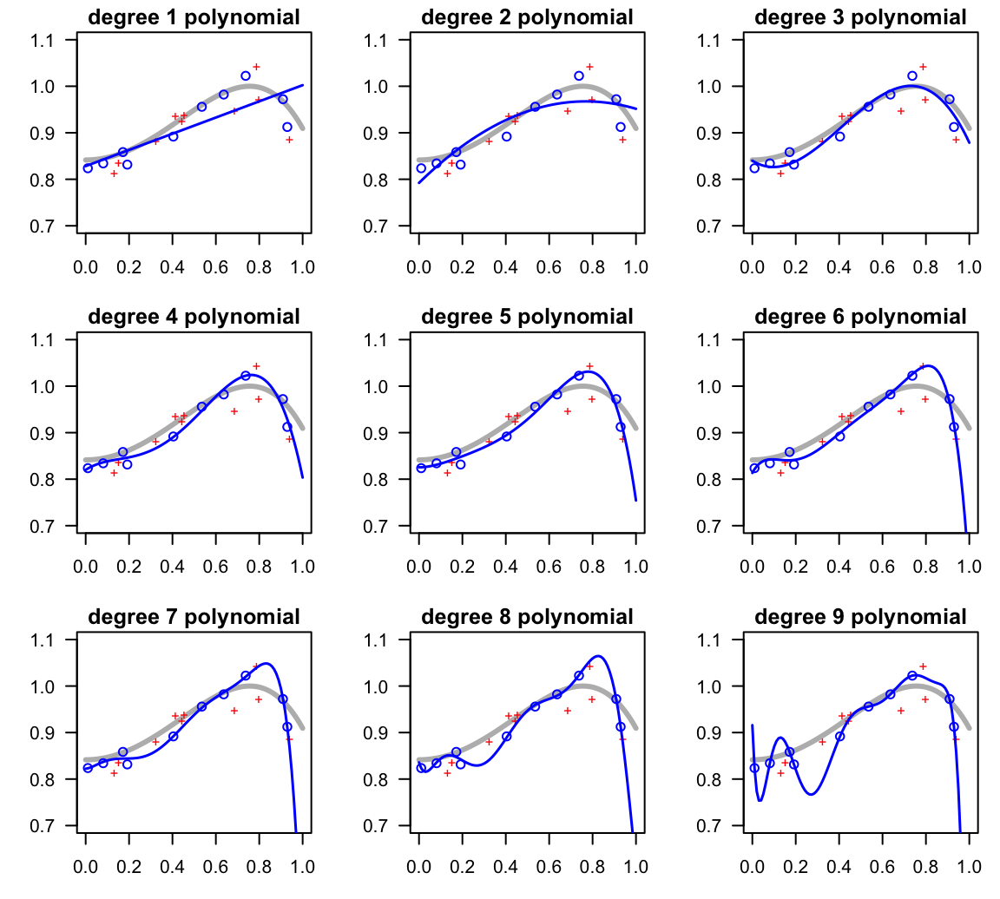
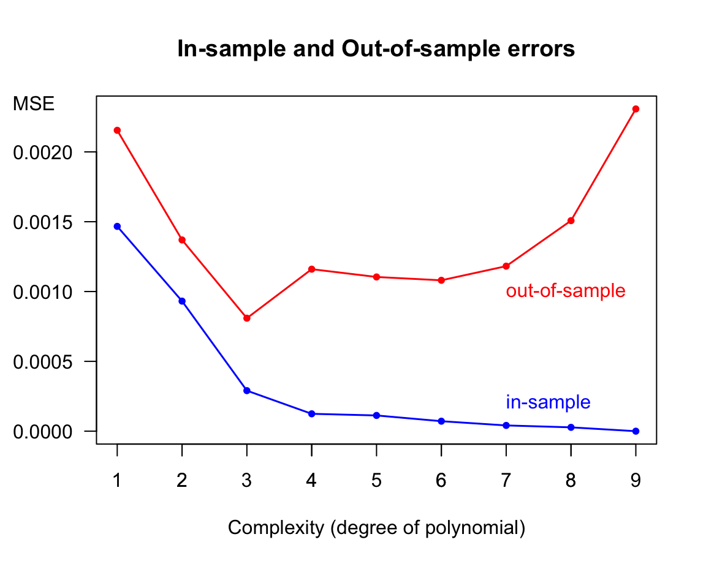

11 Overfitting
In supervised learning, one of the major risks we run when fitting a model is to overestimate how well it will do when we use it in the real world. This risk is commonly known under the name of overfitting, and it also has its little sibling underfitting. In this chapter we discuss these topics, or to be more precise:
- What is overfitting? and why is it troublesome?
- What causes overfitting?
- What can be done to prevent/mitigate overfitting?
11.1 Introduction
The phenomenon of overfitting is very similar to when we felt overconfident before taking a test, and then finding out that we were not as well prepared for the actual test as we presumptively thought. Following on this metaphor of studying for a test, we are pretty sure you have experienced the following situations:
Limited capacity: You studied for a test, and were able to grasp—in a more or less superficial way—the general idea for some topics, but lacked many of the important details. For instance, you read about simple linear regression, understanding the idea of fitting a line, but not being able to explain how to derive the formula of the regression line.
Too much focus: You studied for a test, focusing too much on certain topics, memorizing most or even all of their details (without necessarily understanding the things that you memorized), at the expense of other topics. For example, you memorized the derivation of the normal equations in a linear regression model, and you even memorized the coefficients of the linear regression example in the book, but at the expense of leaving out the role and properties of the hat matrix.
Distraction by “noise”: Despite your best disposition to study for a test, you were not able to study properly because of major distractions. For example: you got distracted with all the notifications in your phone, or an emergency happened that affected your studying plans, or you got distracted with the noise produced by those loud reparations taking place in your neighbor’s building.
Those of us who have experienced these pitfalls, know very well that they typically lead to poor performance on the test, or at least they result in a lower than expected performance.
It turns out that these issues are also shared by supervised learning systems, and they are directly related with the ingredients of the Bias-Variance decomposition. So, in order to identify the three previous pitfalls, here’s a reminder of the BV decomposition.
11.1.1 Bias-Variance Reminder and Pitfalls
We assume a response variable \(y = f(x) + \varepsilon\), and we seek to find a model \(\widehat{h}\) that is a good approximation to the target model \(f\). Given a learning data set \(\mathcal{D}\) of \(n\) points, and a hypothesis \(h(x)\), the expectation of the Squared Error for a given out-of-sample point \(x_0\), over all possible learning sets, is expressed as:
\[\begin{align} \mathbb{E}_{\mathcal{D}} \left [ \left( h^{(\mathcal{D})}(x_0) - f(x_0) \right)^2 \right ] &= \underbrace{\mathbb{E}_{\mathcal{D}} \left [ \left (h^{(\mathcal{D})}(x_0) - \bar{h}(x_0) \right)^2 \right ]}_{\text{variance}} \\ &+ \underbrace{ \big( \ \bar{h}(x_0) - f(x_0) \big)^2 }_{\text{bias}^2} \\ &+ \underbrace{ \sigma^2 }_{\text{noise}} \\ &= \text{var} + \text{bias}^2 + \sigma^2 \tag{11.1} \end{align}\]
where:
\[ \bar{h}(x_0) = \mathbb{E}_{\mathcal{D}} \left[ h^{(\mathcal{D})}(x_0) \right] \quad \text{is the average hypothesis} \tag{11.2} \]
In summary:
Bias: how much of the target model’s behavior your class of model \(\bar{h}()\) can approximate.
Variance: how much variation the fitted model \(h()\) experiments when exposed to a given learning data set.
Noise: random or irreducible noise \(\sigma^2\) in the data.
Pitfalls
Having reviewed the BV-decomposition, we can now give names to the three kind of pitfalls shared by supervised learning systems:
Large Bias is the equivalent of suffering from a “limited learning capacity”. Models, or to be more precise class of models, that are largely biased have too little capacity to get close enough to the true model.
Large Variance is the equivalent of focusing too much on certain details, that may well not be that important, at the expense of other equally or more important details.
Large Noise is the equivalent of getting distracted by the noise in the data. This is especially serious when working with bad data, extremely messy, perhaps having many missing values, or just simply being of poor quality.
At this point, it would be nice to consider a simulation example in order to illustrate each of the listed pitfalls, and how they are connected to the so-called notions of overfitting and underfitting.
11.2 Simulation
Let’s carry out a simple simulation. We are going to consider a target function with some noise given by the following expression:
\[ f(x) = sin(1 + x^2) + \varepsilon \]
with the input variable \(x\) in the interval \([0,1]\), and the noise term \(\varepsilon \sim N(\mu=0, \sigma=0.03)\).
The function of the signal, \(sin(1 + x^2)\), is depicted in the figure below. Keep in mind that in real life we will never have this knowledge: we won’t really know the true form of the target function.

Figure 11.1: Target signal function
We have a model to play with. But, what about the data? We are going to simulate one in-sample set of 10 points \((x_i, y_i)\), and one out-of-sample set of also 10 points \((x_0, y_0)\).
x_in y_in x_out y_out
1 0.6364 0.9822 0.1313 0.8135
2 0.9293 0.9124 0.1515 0.8359
3 0.1919 0.8315 0.4444 0.9253
4 0.5354 0.9559 0.4141 0.9360
5 0.9091 0.9722 0.7879 1.0430
6 0.0808 0.8342 0.4545 0.9379
7 0.7374 1.0224 0.7980 0.9723
8 0.4040 0.8918 0.3232 0.8815
9 0.0101 0.8237 0.9394 0.8863
10 0.1717 0.8584 0.6869 0.9474In the figure below, the in-sample points are depicted as blue circles, and the out-of-sample points are depicted as red crosses. We should emphasize the fact that this out-of-sample set is just for simulation purposes. A more formal out-of-sample set should include all \(x\)-values in the interval \([0,1]\). Likewise, we are including the curve of the signal just for visualization (in practice you won’t have this luxury).
Figure 11.2: Target signal with 10 in-sample points, and 10 out-of-sample points
In this simulation analysis, we are interested in fitting several regression models taking the form of polynomials of various degrees. In theory, we could start by fitting a polynomial of degree zero, that is, a constant model. But we are going to skip this basic model and instead begin by fitting a linear model (i.e. degree 1 polynomial). Then a second degree polynomial, a third degree model, and so on and so forth. Having only 10 in-sample points, the maximum degree polynomial that can be fitted is a 9-degree polynomial.
Linear Model
The first fitted model is a linear model of the form:
\[ h_1(x) = b_0 + b_1 x \]
The fitted regression model is shown in the figure below (see blue line).
Figure 11.3: Linear model fit on in-sample points
With the obtained model, the corresponding in-sample error \(E_{in}\) and out-of-sample error \(E_{out}\) are:
Ein Eout
0.00147 0.00215 Quadratic Model
The second fitted model is a quadratic model (i.e. polynomial of degree 2)
\[ h_2(x) = b_0 + b_1 x + b_2 x^2 \]
The following picture displays the fitted model (see blue curve).

Figure 11.4: Quadratic model fit on in-sample points
In this case, the corresponding in-sample error \(E_{in}\) and out-of-sample error \(E_{out}\) are:
Ein Eout
0.00093 0.00137 Nonic Model
Because we have \(n = 10\) data points, we can fit a polynomial up to degree 9, which is called a nonic:
\[ h_9(x) = b_0 + b_1 x + b_2 x^2 + \dots + b_8 x^8 + b_9 x^9 \]
Figure 11.5: Nonic model fit on in-sample points
The corresponding in-sample error \(E_{in}\) and out-of-sample error \(E_{out}\) are:
Ein Eout
0.00000 0.00231 So far …
With these three models fitted so far (linear, quadratic and nonic), the one that best fits the in-sample data is the 9-degree polynomial which achieves zero in-sample error. From this narrow perspective, it is very tempting to select \(h_9(x)\) as our winner model. After all, this is the model with a perfect fit to the learning data. But is this a wise idea?
Figure 11.6: Linear, quadratic and nonic regression lines with in-sample error values
11.2.1 Underfitting, Overfitting and Okayfitting
To better unerstand the behavor of low-order versus high-order polynomials, it would be nice to compare all fitted polynomials from degree 1 to 9, and evaluate not just their in-sample performance, but also their out-of-sample behavior (see figure and table below). In fact, at the end of the day it is the out-of-sample performace that we care about when deploying a model to the real world.

The following table shows both the in-sample error and the out-of-sample error for each of the nine regression models:
degree Ein Eout
1 1 0.00147 0.00215
2 2 0.00093 0.00137
3 3 0.00029 0.00081
4 4 0.00012 0.00116
5 5 0.00011 0.00110
6 6 0.00007 0.00108
7 7 0.00004 0.00118
8 8 0.00003 0.00151
9 9 0.00000 0.00231As you can tell, the linear model does not have enough capacity. Although it does approximate the general positive trend between \(y\) and most of the range of \(x\)-values, its in-sample error is the largest of all. Compared to the rest of the models, we say that this polynomial underfits the data. This means that we could increase a more complex model producing lower \(E_{in}\) and \(E_{out}\).
The quadratic model does a slightly better job than the linear model, but still misses the sigmoidal shape of the signal. Compared to the more flexibile polynomials, we can also say that this model is underfitting.
Interestingly, the polynomials of degrees 3, 4, and 5 are able to approximate most of the overall shape of the target model. And at least visually, we can tell that the cubic polynomial is the model with an “okayfit”.
In turn, the degree-9 polynomial, while it does a terrific job of passing through all the in-sample points, it is too wiggly. Formally, we say that this model is too flexible.
To facilitate the comparison between in-sample error versus out-of-sample error, we graph them as error curves along their level complexity in terms of the polynomial degree.

As you might suspect, selecting the 9-order polynomial out of all nine models because it is the one that has perfect in-sample prediction is not the best decision. Compared to the rest of the models, we say that the 9-order regression model overfits the data. And so do the 8-order and 7-order polynomial to a lesser extent. Overfitting means that an attractively small \(E_{in}\) value is no longer a good indicator of a model’s out-of-sample performance.
11.2.2 More learning sets
Having the “view of the gods”, we can easily see how wiggly the 9-degree polynomial model is compared to the true signal. It is not hard to imagine that a different learning set of 10 points following the same target distribution, will result in completely different 9-order polynomials. This situation is illustrated in the following diagram, in which three new learning sets of size \(n = 10\) have been generated, each with the fitted class of polynomial.
Figure 11.7: Three additional models based on three different learning sets
Notice again the high flexibility of the high-order polynomials, namely those of degree 7, 8 and 9. Because each learning set contains 10 points, all the 9-order polynomials fit them perfectly. However, they all show an extremely volatile behavior. In contrast, the low-order polynomials, namely the linear, the quadratic and the cubic models are much more stable.
11.2.3 When does overfitting occurs?
Simply put, overfitting happens when we fit the data more than is necessary. More formally, overfitting is the phenomenon when we choose the model with smaller \(E_{in}\), and it turns out in bigger \(E_{out}\). This implies that the in-sample error \(E_{in}\), in and of itself, is no longer a good indicator for the chosen model’s generalization power when predicting out-of-sample data.
What about underfitting? This occurs with models that perform poorly on unseen data because of their little capacity or flexibility. Under-fit models are not of the right class, and they suffer from large bias. In practice, of course, it is generally impossible to know the true class of model for the target function. How can we really know that \(f(x)\) is a cubic model, or that it is polynomial of a certain degree? Well, we can’t. However, we can get an idea of the complexity of our hypothesis models. In general, low complexity models tend to be biased, and viceversa, with more complex models the amount of bias decreases.
The important thing, at least in theory, is that if none of the proposed hypothesized models contain the truth, they will be biased. Keep in mind that the amount of bias does not depend on the size of the in-sample set. This means that increasing the number of learning points won’t give you a better chance to approximate \(f()\).
The thing that does depend on the number of learning points is the variance of the model. As \(n\) increases, large-capacity models will experience a reduction in variability, and their higher flexibility tends to become an advantage.
There is nothing remarkable about polynomials here. All of the same comments and remarks apply to other flexible classes of models, such as non-parametric regression models (e.g. kernel models), k-nearest neighbors, locally weighted regressions, dimension reduction techniques, penalized models, etc.
11.3 In Summary
We have three characteristic situations:
Underfitting: when the model has limited learning capacity, and gets only the “general ideal”.
Overfitting: when the model shows good performance in-sample, but when applied to out-of-sample data, it performs poorly.
Okayfitting: when the model reaches the “ritgh amount” of learning capacity, with good performance both in-sample as well as out-of-sample.
Overfitting is not just “bad generalization”, it is more complex than that. Think of overfitting as a phenomenon or process in which as the complexity or flexibility of the model increases, the in-sample error decreases while the out-of-sample error increases. The trick is to find the sweet spot of adequate complexity such that both in-sample and out-of-sample errors have an okay low performance, as depicted in the following diagram.
Figure 11.8: Moving from underfitting to okayfitting to overfitting